iOS Federal SDK Sample
Overview
This sample will provide the steps to create a simple iOS app that can consume DOL Data. Following these steps in order will allow your app to operate correctly. Download this project
You can also download a sample application that uses non-DOL APIs owned by other federal government agencies.
Create a New Project
From the file menu in Xcode select New -> New Project.
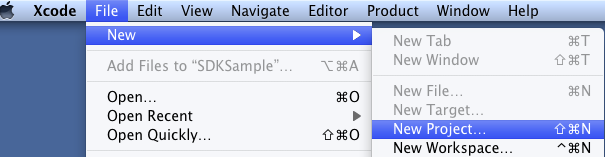
Choose a template for your project. For this example we choose Master-Detail Application.
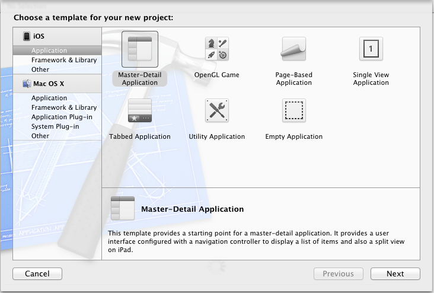
Provide a Product Name and Company Identifier and complete the New Project wizard.
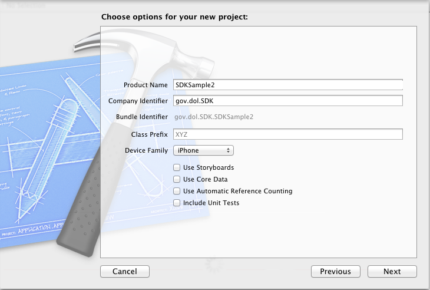
Add Dependencies
The DOL Data SDK has some library dependencies we must add to the project. From the left pane choose the project (top level in the list), then from the center pane select the target. From the right pane choose the Build Phases tab.
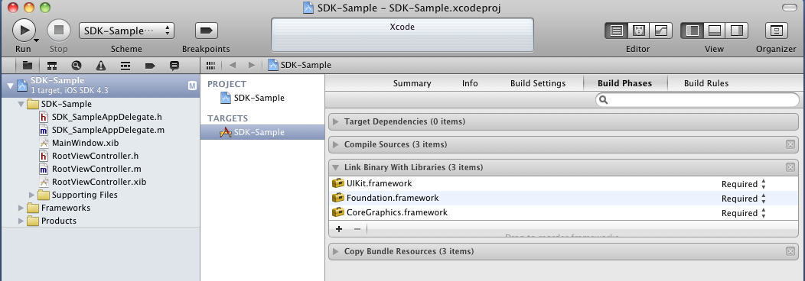
Expand the Link Binary with Libraries section. Click the + button to add the required frameworks. From the list that pops up choose:
- libz.dylib
- MobileCoreServices.framework
- CFNetwork.framework
- SystemConfiguration.framework
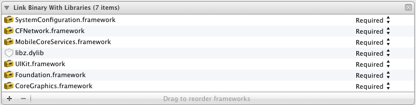
Add SDK to Project
Add the SDK to your project. You can get it by either extracting the zipped SDK folder or by grabbing the Git repository. and drag-and-drop the DOLDataSDK folder to you project root (the first item on the left pane).
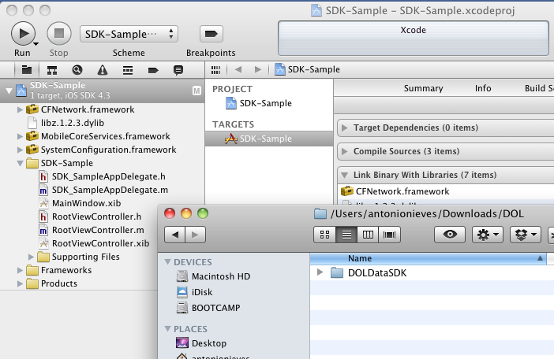
From the option screen that pops up choose 'Copy items into destinations group folder' and 'Create groups for any added folders'.
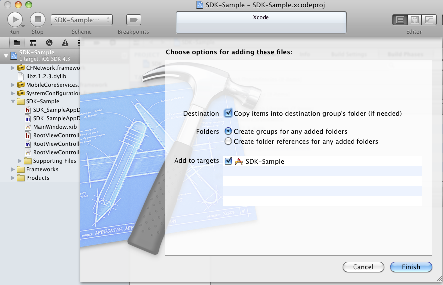
Test that all the steps above have been done correctly by building the application. From the product menu, select Product -> Build.
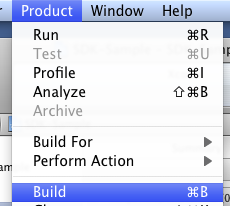
The status area at the top center should display that the build succeeded with no issues.
Locate Dataset Path
Each Dataset has a Dataset Location path that gives the URL that will be needed for the data request. This address is circled in red. (http://api.dol.gov/V1/Compliance/WHD)
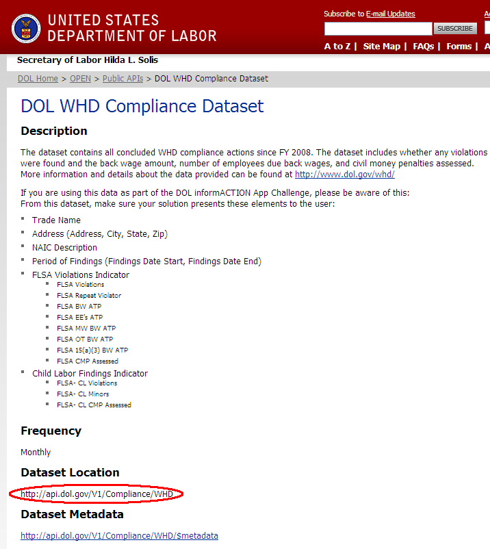
The data request will also need the location of the table you are pulling data from. The tables are listed under their datasets. This table's name is circled in red.
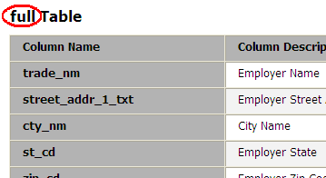
Create the Master View Controller
Open MasterViewController.h.
- We must modify the class so that it can respond to the GOVDataRequest delegate methods. Do this by adding the <GOVDataRequestDelegate> protocol to the class.
- Add a NSArray ivar to store the results (*arrayOfResults).
- Add a GOVDataRequest ivar. This is how we will make requests to the API.
- Create properties for both ivars.
// MasterViewController.h // SDK-Sample // #import#import "GOVDataRequest.h" @interface MasterViewController : UITableViewController<GOVDataRequestDelegate> { // We will store the results here NSArray *arrayOfResults; NSDictionary *dictionaryOfResults; // API Request object GOVDataRequest *dataRequest; } @property(nonatomic, retain)NSArray *arrayOfResults; @property(nonatomic, retain)GOVDataRequest *dataRequest; @property (nonatomic, retain)NSDictionary *dictionaryOfResults; -(void)govDataRequest:(GOVDataRequest *)request didCompleteWithError:(NSString *)error; -(void)govDataRequest:(GOVDataRequest *)request didCompleteWithResults:(NSArray *)resultsArray; -(void)govDataRequest:(GOVDataRequest *)request didCompleteWithDictionaryResults:(NSArray *)resultsDictionary; @end
Open MasterViewController.m. Add #define constants for your API Key, Secret and Host. In a real production application, you may choose to store this information elsewhere (keychain, plist, etc).
#import "MasterViewController.h" //Set API key information #define API_KEY @"YOUR API KEY" #define API_SECRET @"YOUR KEY SECRET" #define API_HOST @"http://api.dol.gov" #define API_URL @"/V1"
Synthesize the two ivars we created earlier.
@implementation MasterViewController @synthesize dataRequest, arrayOfResults, dictionaryOfResults;
In this example we make the API call as soon as the app launches.
- Create a GOVDataContext object. This object stores the API key information and URL.
- Alloc init the GOVDataRequest ivar with the context object as parameter.
- Set self as the delegate. This ensures that this class' GOVDataRequestDelegate methods are called when the API call completes.
- Create an NSDictionary and store the arguments you want to send with the API call
- Call callAPIMethod:withArguments:, providing the Dataset Location path, table name, and arguments dictionary. This will execute asyncronously.
-(void)viewDidLoad
{
[super viewDidLoad];
self.title = @"SDK Sample";
//Create Context object
//This object will store the URL and authorization information
GOVDataContext *context = [[GOVDataContext alloc] initWithAPIKey:API_KEY Host:API_HOST SharedSecret:API_SECRET APIURL:API_URL];
//Instantiate a new request
dataRequest = [[GOVDataRequest alloc] initWithContext:context];
//Set self as a delegate
dataRequest.delegate = self;
//Define the method that will be called
NSString *method = @"Compliance/WHD/full";
//Create a dictionary of arguments
//Top 20 records; Selected 3 columns.
NSDictionary *arguments = [NSDictionary dictionaryWithObjectsAndKeys:@"20", @"top", @"trade_nm,city_nm,st_cd", @"select", nil];
//Set the timeout. Set this higher for long-loading APIs
int timeOut = 20;
//Call API method with the arguments
//didCompleteWithResults or didCompleteWithError delegate method will be called
//when results or errors are returned
[dataRequest callAPIMethod:method withArguments:arguments andTimeOut:timeOut];
}Implement the GOVDataRequestDelegate methods didCompleteWithResults and didCompleteWithDictionaryResults:
- Store results to the NSArray ivar. We need to retain the array because it is autoreleased. Otherwise the app will crash when the table refreshes.
- Reload the table view.
#pragma mark GOVDataRequest delegate methods
-(void)govDataRequest:(GOVDataRequest *)request didCompleteWithResults:(NSArray *)resultsArray {
NSLog(@"Got results");
//Save results in our local array instance
self.arrayOfResults = [resultsArray retain];
//Refresh the tableView
[self.tableView reloadData];
}
-(void)govDataRequest:(GOVDataRequest *)request didCompleteWithDictionaryResults:(NSDictionary *)resultsDictionary {
NSLog(@"Got a Dictionary");
//Save results in our local dictionary instance
self.dictionaryOfResults = [resultsDictionary retain];
// NSLog(@"%@", self.dictionaryOfResults);
//Refresh the tableView
//[self.tableView reloadData];
}Implement the govDataRequestDelegate method didCompleteWithError:. In this example we chose to just show the error in an UIAlertView.
-(void)GOVDataRequest:(GOVDataRequest *)request didCompleteWithError:(NSString *)error {
UIAlertView *alert = [[UIAlertView alloc] initWithTitle:@"Error" message:error delegate:nil cancelButtonTitle:@"Dismiss" otherButtonTitles:nil];
[alert show];
[alert release];
}Complete the table view requirements:
- Return the count for the results array in the numberOfRowsInSection: method
- In the cellForRowAtIndexPath: method create an NSDictionary variable pointing to the object in the results NSArray whose index is equal to the row we are rendering.
- Now we can set the cells text labels to any property of the NSDictionary.
- The NSDictionary keys will be equal to the table column names.
//Customize the number of sections in the table view.
-(NSInteger)numberofSectionsInTableView:(UITableView *)tableView
{
return 1;
}
-(NSInteger)tableView:(UITableView *)tableView numberOfRowsInSection:(NSInteger)section
{
return [self.arrayOfResults count];
}
//Customize the appearance of table view cells.
-(UITableViewCell *)tableView:(UITableView *)tableView cellForRowAtIndexPath:(NSIndexPath *)indexPath
{
static NSString *CellIdentifier = @"Cell";
UITableViewCell *cell = [tableView dequeueReusableCellWithIdentifier:CellIdentifier];
if (cell == nil) {
cell = [[[UITableViewCell alloc] initWithStyle:UITableViewCellStyleSubtitle reuseIdentifier:CellIdentifier] autorelease];
}
//arrayOfResults is an array of NSDictionaries
//Get the record
NSDictionary *result = (NSDictionary *)[arrayOfResults objectAtIndex:indexPath.row];
// Configure the cell.
//Set the cell text to trade_nm
cell.textLabel.text = (NSString *)[result objectForKey:@"trade_nm"];
//Set the cell small text to "city, state"
cell.detailTextLabel.text = [NSString stringWithFormat:@"%@, %@", (NSString *)[result objectForKey:@"city_nm"], (NSString *)[result objectForKey:@"st_cd"]];
return cell;
}
Release any objects in the dealloc method.
-(void)dealloc
{
[arrayOfResults release];
[dictionaryOfResults release];
[dataRequest release];
[super dealloc];
}View DOL Data
Build and run the application, and you should see something like the following:
For DOL API datasets :
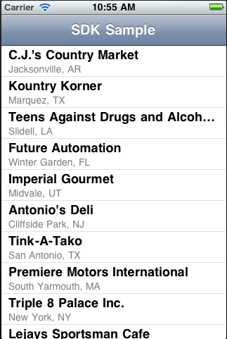